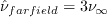
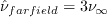
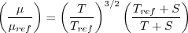
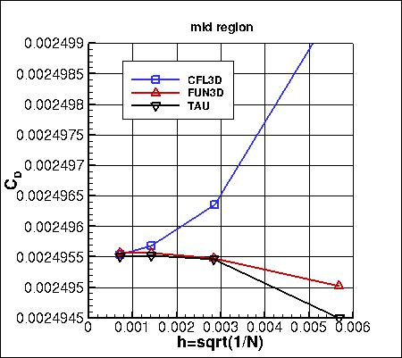
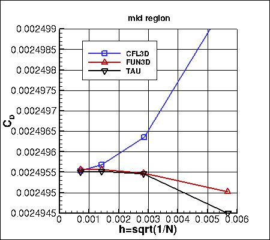

Return to: Finite Flat Plate Validation for Numerical Analysis Intro Page
Return to: Turbulence Modeling Resource Home Page
TURBULENCE MODEL NUMERICAL ANALYSIS
2D
Finite Flat Validation Case
SA Model Results
Link to SA equations
Please refer to AIAA Journal, Vol. 54, No. 9, 2016, pp. 2563-2588,
https://doi.org/10.2514/1.J054555 and AIAA Paper 2015-1746,
https://doi.org/10.2514/6.2015-1746.
Also, at least one of the other papers from two special sessions at AIAA SciTech 2015 dealt with this case: see
AIAA Paper 2015-1530,
https://doi.org/10.2514/6.2015-1530.
Results are shown here for the finite flat plate at M=0.2, Re=5 million based on unit 1 of the grid.
The boundary conditions are shown pictorially on the
Finite Flat Plate Validation for Numerical Analysis Intro Page.
Note that the inflow conditions in this case are important; for example, it was discovered
that rounding off Pt/Pref from 1.02828 to 1.0283 made a noticeable difference in the results,
to the accuracy scrutinized in the plots below
(CD was about 2.e-6 higher).
Three different CFD codes (FUN3D, CFL3D, and
TAU) have been employed
in an effort to try to discern the grid-converged result for this case.
Results here
are for the "standard" SA model. However, note that FUN3D and TAU make use of
the SA-neg variant, which was designed for improved numerical
behavior. SA-neg is passive to the
original (SA) model in well-resolved flowfields, and hence is expected to yield essentially identical
results for the cases here.
Furthermore, FUN3D and TAU both used clipping method "c" for  ,
while CFL3D used clipping method "a" (see Note 1 on
the Spalart-Allmaras equation page).
For all codes, the farfield value of the Spalart turbulence variable is
.
The Prandtl number Pr is taken to be constant at 0.72, and turbulent Prandtl
number Prt is taken to be constant at 0.9.
The dynamic viscosity is computed using
Sutherland's Law (See White, F. M., "Viscous Fluid Flow," McGraw Hill, New York, 1974, p. 28).
In Sutherland's Law, the local value of dynamic viscosity is determined by plugging the local value of temperature
(T) into the following formula:
,
while CFL3D used clipping method "a" (see Note 1 on
the Spalart-Allmaras equation page).
For all codes, the farfield value of the Spalart turbulence variable is
.
The Prandtl number Pr is taken to be constant at 0.72, and turbulent Prandtl
number Prt is taken to be constant at 0.9.
The dynamic viscosity is computed using
Sutherland's Law (See White, F. M., "Viscous Fluid Flow," McGraw Hill, New York, 1974, p. 28).
In Sutherland's Law, the local value of dynamic viscosity is determined by plugging the local value of temperature
(T) into the following formula:

where
 ,
,
 , and
.
The same formula can be found online
(with temperature constants given in degrees K and some small conversion differences).
Note that in terms of the reference quantities for this particular case, Sutherland's Law can equivalently be written:
, and
.
The same formula can be found online
(with temperature constants given in degrees K and some small conversion differences).
Note that in terms of the reference quantities for this particular case, Sutherland's Law can equivalently be written:
- 
where
 is the reference dynamic viscosity that corresponds to the freestream in this case, and
freestream
is the reference dynamic viscosity that corresponds to the freestream in this case, and
freestream  (as defined on the
previous
page) is 540R. This latter form may be more convenient for nondimensional codes.
(Specific details regarding an implementation of Sutherland's Law in nondimensional codes can be found in
handwritten notes describing Sutherland's Law in CFL3D and FUN3D.)
(as defined on the
previous
page) is 540R. This latter form may be more convenient for nondimensional codes.
(Specific details regarding an implementation of Sutherland's Law in nondimensional codes can be found in
handwritten notes describing Sutherland's Law in CFL3D and FUN3D.)
The
grids in this case were stretched near the
leading and trailing edges of the plate such that the cell aspect ratio in those regions was very close to 1.
See AIAA Paper 2015-1746,
https://doi.org/10.2514/6.2015-1746.
for additional results when using a different aspect ratio.
For these computations, all codes employed second-order turbulence advection when solving the SA equation.
As seen in the following plots, the results from all 3 codes are consistent (approach nearly the same results)
as grid is refined (h approaches zero). CFL3D generally shows the largest sensitivity to grid size.
Note that the maximum eddy viscosity occurs at the very back of the domain (x=4). Because CFL3D is a
cell-center code, its maximum value is slightly upstream (and therefore lower) than the
maximum values from FUN3D and TAU, which occur at x=4. However, as the grid is refined,
the last cell-center location in CFL3D gets closer and closer to x=4, so CFL3D's maximum eddy viscosity
still approaches the approximate value approached by the other two codes.
The data that generated the above plots is
given in:
all_dragfull.dat and
all_eddyviscmax.dat.
The flat plate boundary is composed of three sections in the grid.
In the following plots, the drag coefficient is broken out by these sections:
- L.E. region: 0 ≤ x ≤ 0.107267441655523
- mid region: 0.107267441655523 ≤ x ≤ 1.89273255834448
- T.E. region: 0.107267441655523 ≤ x ≤ 2
 

The data that generated the above plots is
given in:
all_dragpartial.dat.
The value of skin friction
coefficient at a specific location on the plate (x=0.8697742) is plotted below two different
ways. The first is as a function of h, while the second is as a function of h2.
All three codes plot closer to linearly when a function of h2, indicating that
the convergence order of this quantity is closer to second order than first order.
 vs h^2")
The data that generated the above plots is
given in:
all_cf_8697742.dat.
Skin friction coefficients on 4 grid levels,
focusing on the leading edge region,
are compared to an approximate analytic fit from AIAA-2015-1746,
https://doi.org/10.2514/6.2015-1746.
CFL3D approaches the analytic value very
near the leading edge from above, whereas both FUN3D and TAU approach it from below.
Skin friction coefficients on 4 grid levels,
focusing on the trailing edge region,
are compared to approximate analytic fits from AIAA-2015-1746. In the analytic functions, c1=0.0027001033 and
c2=0.000007.
The data that generated the above plots is
given in:
all_cf_global.dat.
Pressure coefficients on 4 grid levels,
focusing on the leading edge region,
are shown below. The cell-centered code CFL3D shows considerably less spread than the other two node-centered codes.

Pressure coefficients on 4 grid levels,
focusing on the trailing edge region,
are shown below. CFL3D again shows considerably less spread than the other two codes.
Pressure coefficients on 4 grid levels,
focusing on the region behind the trailing edge (in the wake),
are shown below.
The data that generated the above plots is
given in:
all_cp_global.dat.
Two different x-stations (x=1 and x=3)
were selected in order to look at profiles.
(Note: the profiles have been interpolated using Tecplot software onto pre-set points, that may or may
not correspond to the actual grid points or grid cells used in the computation.)
Along x=1, the u-component of
velocity (overall and zoomed in) and the eddy viscosity (overall and zoomed in) are shown below.
The data that generated the above plots is
given in:
all_u_x1.dat and
all_mut_x1.dat.
Along x=3, the u-component of
velocity (overall and zoomed in) and the eddy viscosity (overall and zoomed in) are shown below.
The data that generated the above plots is
given in:
all_u_x3.dat and
all_mut_x3.dat.
Return to: Finite Flat Plate Validation for Numerical Analysis Intro Page
Return to: Turbulence Modeling Resource Home Page
Page Curators: Christopher Rumsey,
Ethan Vogel,
Clark Pederson
Last Updated: 11/10/2021

, TAU")